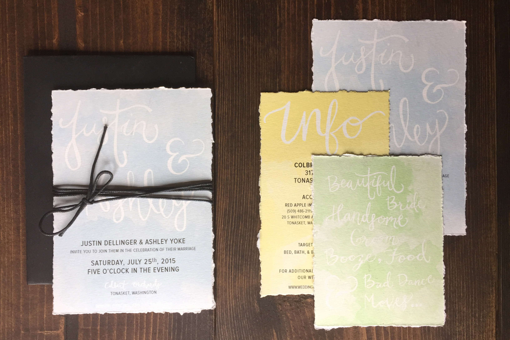

I wanted to give an extra special touch to this set of invitations and give them a unique and handcrafted feel. The lettering was all done by hand and scanned in to give the text the appearance that it had also been painted by watercolor.


Originally, I had printed the invitations on plain old cardstock, but physical touch didn't match the appearance. I then decided to print them on water color paper to give them a genuine feel. In the end I ended up using a straight edge to tear the paper.
This wedding invitation set was created for a friend of mine who gave me the honor of designing her stationary. Her summer wedding is going to be decorated in pastels, and she asked that I design something out of the ordinary. Pulling from a summery color pallete, I combined watercolor to create something unique.
← Back to Portfolio